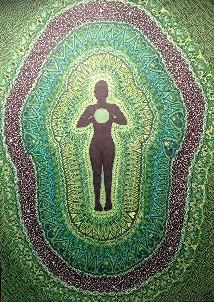

4 чакра "Анахата" Расшифровка, где находится, как раскрыть
Чакры - это энергетические центры в теле человека, которые отвечают за наше самочувствие. Подробнее об этом здесь, а в этой статье мы поговорим о четвёртой чакре - Анахата
4 чакра - "Анахата" (сердечная чакра) - отвечает за любовь к себе и миру, сострадание и прощение, веру, надежду, интуицию и исполнение желаний.
- Расположение: грудная клетка
- Внешний вид: зелёный лотос с двенадцатью лепестками, в центре которого располагаются два треугольника
- Функции: отвечает за способность отдавать и принимать, за отношения, поддерживает гармонию и лёгкость человека
Симптомы заблокированной энергии:
- Сердечно-сосудистые заболевания (физика)
- Респираторные заболевания (астма, пневмония, рак лёгких и т.п.) (физика)
- Проблемы с верхней частью спины (физика)
- Зависимость от других людей, созависимые отношения (энергия)
- Отшельничество, изоляция (энергия)
- Чувство обиды, нежелание прощать, ревность (энергия)
- Нелюбовь к себе, повышенная требовательность к себе и другим людям (энергия)
Проблемы в отношениях, искажённое восприятие действительности, постоянное чувство тревоги.
Что блокирует энергию:
Недолюбленный ребёнок, постоянные ссоры в семье, занижение собственной важности, отрицание талантов, несчастная любовь, одиночество, высокомерие, безответственность, непозволительное доминирование, отсутствие веры (в Бога, Вселенную) и внимания к себе.
Как открыть сердечную чакру:
Йога, медитации и мантры (направленные на раскрытие четвёртой чакры), практика благодарности. Включить зелёные оттенки (одежда, пища) в свою жизнь, использовать соответствующие камни (в медитациях или просто носить с собой).
Заботиться о себе, быть честным с самим собой, найти друзей, соответствующих вашему уровню. Уборка собственной территории, научиться просить прощения, простить себя и других людей.
Как понять, что чакра открыта и сбалансирована?
Все цели всегда воплощаются в реальность, человек всегда знает, что будет для него лучше, выбирает себя. Испытывает безусловную любовь к себе и своим близким, умеет слушать, брать и отдавать, умеет признавать вину и прощать. Счастливая семейная жизнь, рядом с таким человеком люди ощущают себя легко и спокойно.